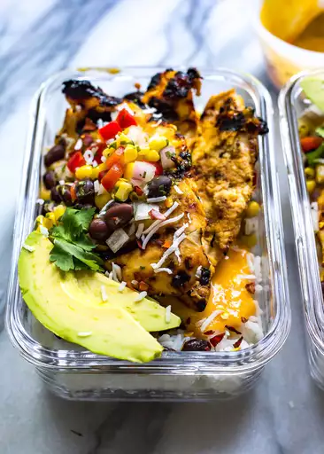

Mango Chicken Meal Prep Bowls

These coconut-mango chicken meal prep bowls with basmati rice, corn salsa,
and an easy mango marinade are a delicious way to prep your lunches for the week!
Top with extra cilantro.
Ingredients
Rice
- 2/3 cup basmati rice
- 1 cup water
Mango Sauce
- 1 mango, peeled and chopped
- 2 tablespoons olive oil
- 2 tablespoons lime juice
- 3 teaspoons honey
- 1 tablespoon sriracha sauce
- 2 cloves garlic, minced
- 1 teaspoon salt
- 4 skinless, boneless chicken breasts, halved lengthwise
Corn Salsa
- 1 (14 ounce) can black beans, drained
- 1 ½ cups corn
- ½ cup diced red bell pepper
- 1 small red onion, diced
- ¼ cup chopped cilantro
- 1 tablespoon lime juice
- ¾ teaspoon salt
- ¼ cup sweetened flaked coconut
- 1 avocado, sliced
Directions
- Preheat an outdoor grill for medium-high heat and lightly oil the grate.
- Bring water and rice to a boil in a saucepan. Reduce heat to medium-low, cover, and simmer until rice is tender and water has been absorbed, 20 to 25 minutes.
- Mix mango, olive oil, lime juice, honey, sriracha sauce, garlic, and salt together in a blender until smooth. Place chicken in a shallow bowl and pour 1/2 the sauce on top; marinate chicken for 10 minutes.
- Mix black beans, corn, red bell pepper, red onion, cilantro, lime juice, and salt together in a bowl for the corn salsa.
- Grill chicken until no longer pink in the center and juices run clear, about 4 minutes per side. An instant-read thermometer inserted into the center should read at least 165 degrees F (74 degrees C). Remove from heat.
- Divide rice among 4 glass meal prep bowls. Add 2 pieces of chicken to each bowl; top with the reserved mango sauce, corn salsa, and coconut. Top with avocado slices, cover, and refrigerate for up to 5 days.
Want to return to the homepage? Then click here
Credits to original recipe from allrecipes.com